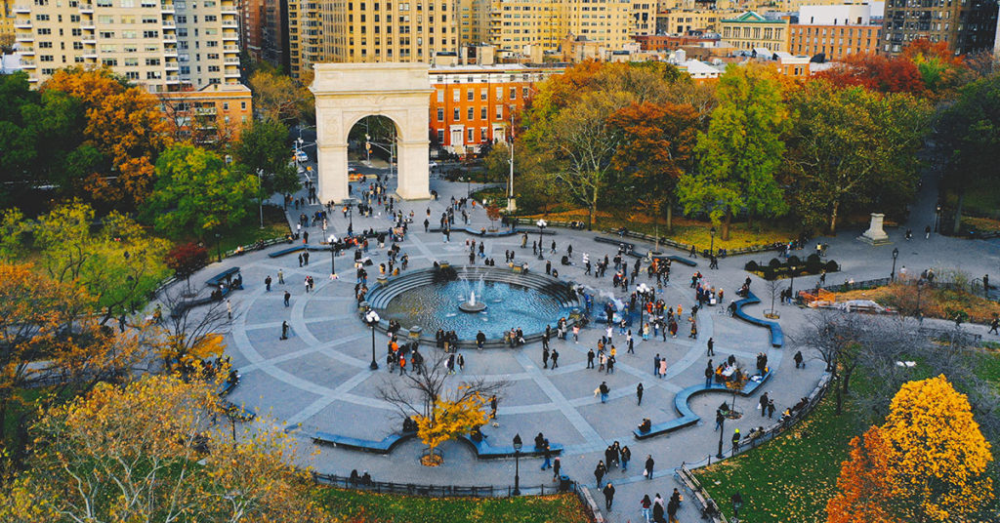

One spot I really enjoy going to is Washington Square Park. When I get the chance I like to go to the park with friends and even by myself as it just puts me in a good mood with its beautiful surroundings.
One spot I do not enjoy are the subway stations. Most subway stations are very dirty and infested with rats. I wish the city put more money and time into making transportation better.